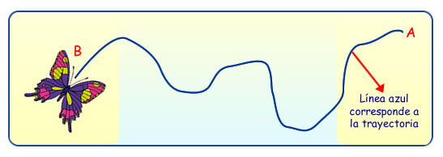
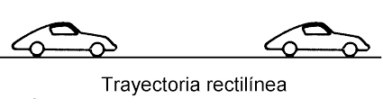
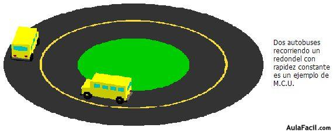
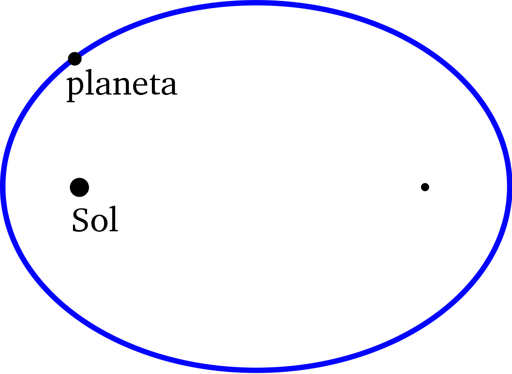

INFORMACION SOBRE EL TEMA
Bienvenido a la sección de información, aquí podrás hacer una retro alimentación del tema propuesto en el juego y además si deseas profundizar mas el tema, puedes aprender con la siguiente información:
¿QUE ES LA ALTURA? 
En palabras sencillas, la trayectoria hace referencia en si, a la forma del movimiento o desplazamiento de un Objeto; Esta trayectoria depende de un sistema de referencia elegido, es decir de un conjunto de conveciones que sirven para poder medir la posición y otras magnitudes físicas, y gracias a este sistema si el objeto esta ya sea en Reposo o en Movimiento.
Tipos de Trayectorias
Si vamos a hablar sobre tipos de trayectoria, encontraríamos demasiados, pues como tu ya sabes un cuerpo se puede mover de diferentes maneras, pero entre los mas importantes encontramos los siguientes:
Trayectoria Rectilínea: Este tipo de Trayectoria es la que trabajaremos en nuestro tema numero 1, este tipo de trayectoria se caracteriza como su nombre lo dice que es recta, es decir su forma de movimiento no posee ninguna curva y su velocidad es constante, es decir siempre es la misma durante todo el recorrido.
 Trayectoria Circular: Este tipo de Trayectoria pertenece al grupo de trayectorias Curvilíneas, esta se caracteriza por que su trayectoria es en si una circunferencia, es decir un circulo
 Trayectoria elíptica: Este tipo de trayectoria hace parte del movimiento elíptico, en el cual la trayectoria que realiza un cuerpo forma una silueta de un circulo achatado en sus dos extremos
 Trayectoria Parabólica: Esta Trayectoria hace parte del movimiento parabólico, y se caracteriza dado a que su trayectoria describe una parábola.
.jpg)
WebGrafia
Información Basada en: Fisicalab Trayectoria